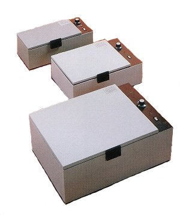

Wolf Radiology Film Duplicator
Wolf Film Duplicators
Wolf manufactures three sizes of x-ray duplicators, with screen sizes of 14" x 17", 10" x 12" and 6" x 12" respectively.
Constructed of steel finished in durable baked enamel, our duplicators can be used with any available duplicating film,
(which is not the same as regular x-ray film.) To operate the duplicators, (in a dark room) simply place the film to be
duplicated on the plexiglass screen with a sheet of duplicating film on top, close the cover, set the exposer time and
push the button. The red light wil signal you when exposure is complete. The 14" x 17" surface of the #21524 accommodates
all x-rays up to 14" x 17". The 10" x 12" surface of the #21522 is perfect for duplicating mammographs and podiatric
radiographs, and the 6" x 12" #21520 duplicates any size up to 6" x 12".

| Stock # | Maximum Film Size | Price |
|---|---|---|
| 21524 | 14" x 17" | $1,018.77 |
| 21522 | 10" x 12" | $667.85 |
| 12520 | 6" x 12" | $621.85 |